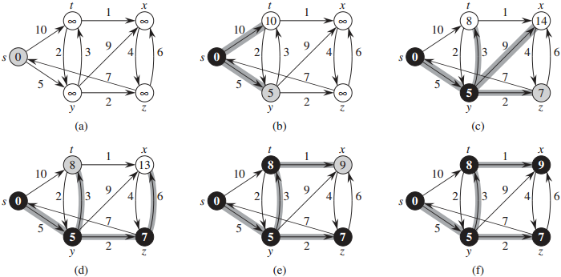

Shortest paths
The shortest path from vertex s to vertex t in a weighted graph is the path from s to t with the minimum total weight. For example, in a road map graph, we might want to know the shortest way to get from one intersection to another.If the graph is unweighted, we can find the shortest path by performing a breadth-first search from s, but this does not work for weighted graphs. A few well-known algorithms are Dijkstra's algorithm, the Bellman-Ford algorithm, and the Floyd-Warshall algorithm.
Single-source shortest path
Dijkstra's algorithm solves the single-source shortest path problem. The weights must be non-negative.Given a source vertex s, it finds the shortest path from s to every other vertex.
As we run the algorithm, we have a set of "known" vertices (vertices for which we know the shortest path) and a set of "unknown" vertices.
For each vertex v, we keep track of the shortest distance from s to v that we've found so far.
Algorithm
- Initialize distance[s] = 0 and distance[v] = ∞ for all v ≠ s.
- While there are unknown vertices:
- Choose the unknown vertex v with the minimum distance, and mark it as known
- For each unknown neighbor w of vertex v:
- // Check if we can reduce w's distance by reaching it through v
distance[w] = min(distance[w], distance[v] + (weight of edge from v to w))
- // Check if we can reduce w's distance by reaching it through v
(a) Initialize distance[s] = 0, other distances = ∞.
(b) Choose minimum-distance unknown vertex, s (s now becomes known). Update distances of s's unknown neighbors (t, y).
(c) Choose minimum-distance unknown vertex, y (y now becomes known). Update distances of y's unknown neighbors (t, x, z).
(d) Choose minimum-distance unknown vertex, z (z now becomes known). Update distances of z's unknown neighbors (x).
(e) Choose minimum-distance unknown vertex, t (t now becomes known). Update distances of t's unknown neighbors (x).
(f) Choose minimum-distance unknown vertex, x (x now becomes known). No distances to update. Finished.

Dijkstra's shortest path. Source: Cormen p. 659
The unknown vertices (stored in the priority queue) are white. The known vertices are black.
The minimum-distance unknown vertex is gray. Vertices are labeled with their current distances.
Runtime
Suppose the graph has V vertices and E edges.
We perform V "find minimum-distance vertex" operations, and at most E "update distance" operations. If we use a priority queue implemented with a min heap (the distance is the priority), each operation takes O(logV) time, so the runtime is O((V+E)logV).
This can be improved to O(VlogV + E) if we use a fibonacci heap (not covered in class).
How can we implement "update distance"? See Sedgewick pp. 323-333 for a priority queue implementation that allows changing priorities.
A simpler implementation is just add a new entry to the priority queue, and ignore the outdated entry when we reach it.
All-pairs shortest path
Suppose we want to know the shortest path from s to t for all pairs s and t.One option is to run Dijkstra's algorithm multiple times, once for each vertex.
Another option is to use the Floyd-Warshall algorithm, which computes the shortest path between all vertex pairs. It is easier to implement and runs in O(V3) time. It works even if there are negative weights, but it does not work if there are negative cycles. For a dense graph (a graph with many edges) it can be faster than running Dijkstra's algorithm V times. It is one of the few graph algorithms typically implemented with an adjacency matrix.
In each step, we introduce a new possible intermediate vertex k.
Then we look at all other vertex pairs and check if their distance can be reduced by going through k.
Algorithm
for k = 0 to V-1
for i = 0 to V-1
for j = 0 to V-1
through_k = weight[i][k] + weight[k][j]
weight[i][j] = min(weight[i][j], through_k)
weight is initially a matrix of edge weights (the weight is ∞ if there is no edge). When the algorithm finishes, it is a matrix of shortest path distances.